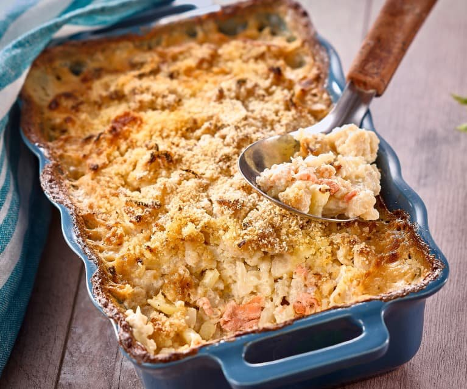

Parmentier de chou-fleur au saumon
Ingrédients
- 500 g d'eau
- 300 g de pommes de terre farineuses
- 1 chou-fleur
- 80 g d'oignon
- 2 gousses d'ail
- 10 g d'huile d'olive
- 150 g de mascarpone
- 200 g de crème liquide entière
- sel
- poivre
- 600 g de saumon frais
- 20 g de chapelure
- 20 g de beurre

Préparation
Étape 1
Mettre 500 g d'eau dans le bol, 300 g de pommes de terre farineuses dans le panier et 1 chou-fleur (1kg) en bouquets dans le Varoma. Cuire à la vapeur 30 min/Varoma/vitesse 1.
Réserver le chou-fleur et couper les pommes de terre en rondelles. Vider le bol.
Étape 2
Hacher 80 g d'oignon et 2 gousses d'ail 5 sec/vitesse 5. Ajouter 10 g d'huile d'olive et rissoler 3 min/120ºC/vitesse 1, sans le gobelet.
Étape 3
Ajouter 150 g de mascarpone, 200 g de crème liquide entière, 2 pincées de sel et 2 pincées de poivre, mélanger 15 sec/vitesse 4. Mélanger avec le chou-fleur.
Étape 4
Préchauffer le four à 210ºC. Dans un plat beurré, disposer 600 g de saumon frais en lanières, puis les pommes de terre. Saler, poivrer et recouvrir de chou-fleur à la crème.
Étape 5
Parsemer de 20 g de chapelure et de 20 g de beurre en noisettes. Gratiner 30 à 40min à 210ºC.
Conseils
- Fonctionne avec un autre poisson.